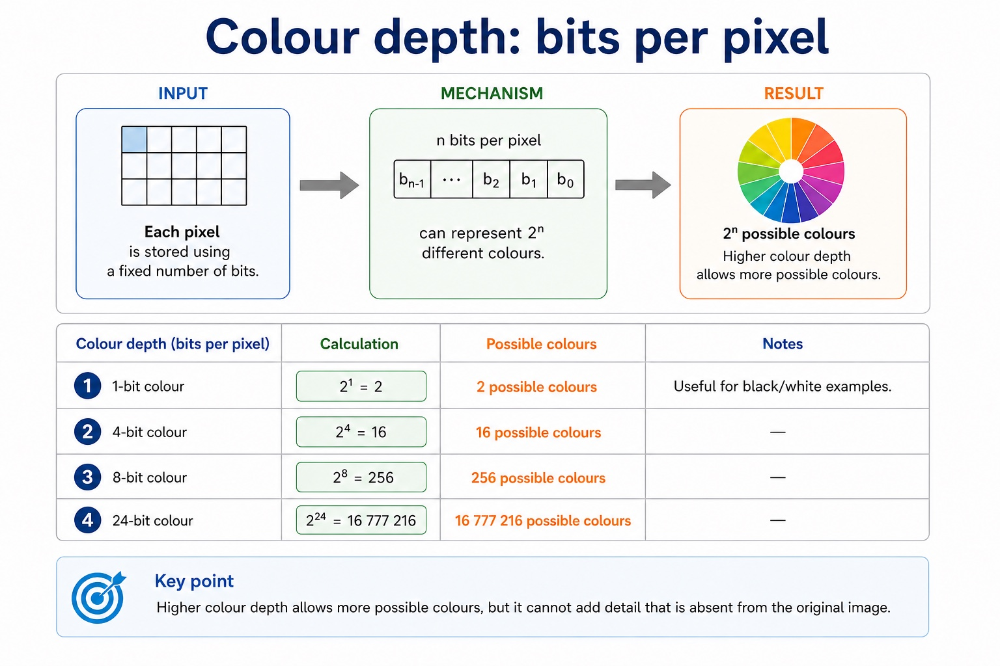

A bitmap stores metadata plus a grid of pixels
Visual overview
Colour depth: bits per pixel

Visual transcript
- 1-bit colour
- 2¹ = 2 possible colours. Useful for black/white examples.
- 4-bit colour
- 2⁴ = 16 possible colours.
- 8-bit colour
- 2⁸ = 256 possible colours.
- 24-bit colour
- 2²⁴ = 16 777 216 possible colours.
- Higher colour depth allows more possible colours, but it cannot add detail that is absent from the original image.
Core explanation
A bitmap file contains pixel data and a file header. The header stores metadata needed to interpret the file, such as its format and image properties; it is not one of the image pixels. When a calculation says to ignore the file header, calculate only width x height x colour depth.
Bitmap metadata is stored separately from pixel values, commonly in a file header. Add header or metadata bytes only when their size is supplied; when a question says to ignore the header, calculate pixel data only.
For an uncompressed bitmap, pixel-data size in bits is width in pixels x height in pixels x colour depth in bits per pixel. Divide by 8 to convert bits to bytes. Use the units requested by the question.
Image resolution is the number of pixels stored in the image, commonly width x height. Screen resolution is the number of physical display pixels available on the screen. They are independent: scaling an image on a screen does not create new captured detail.